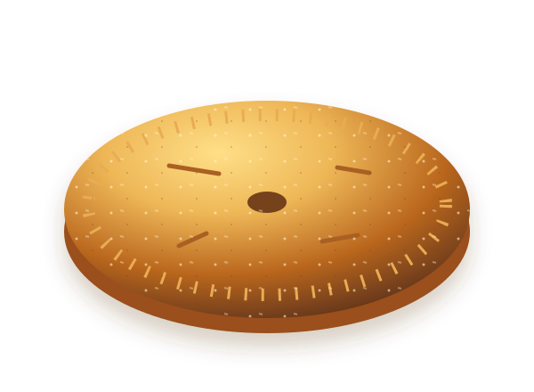
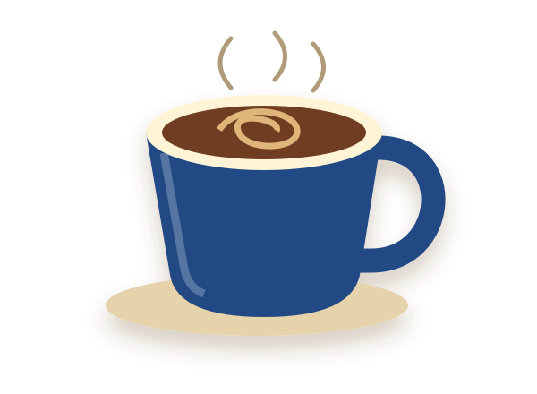

Пекарня · Краснодар
Хлеб.
Крошки.
Хороший день.
За хлебом к столу.
За выпечкой к кофе.
За маленькой паузой для себя.
У каждого дня
своя корочка.
Начните с любимого. Хлеб, выпечка, пироги или чашка кофе — что подходит вашему настроению?
ХлебК завтраку и общему столу
Хлеб, багет, кукурузный хлеб. Выберите основу для бутерброда или дополнение к любимому блюду.
Виды и наличие уточняйте в пекарне.
ВыпечкаДля сладкой паузы
Круассаны, сладкие булочки, слойки и сочники. Для тех минут, когда хочется отложить дела и налить чай.
Начинки, состав и наличие уточняйте в пекарне.

ПирогиПовод собраться за столом
Осетинские пироги — идея для обеда или встречи с близкими. Осталось выбрать, с кем разделить.
Начинки, размер и наличие уточняйте в пекарне.

КофеХорошая компания для выпечки
Чашка кофе и что-нибудь с витрины. Простое сочетание для небольшой передышки.
Доступные напитки и состав уточняйте в пекарне.
Витрина меняется. Наличие, состав и аллергены уточняйте у сотрудников перед покупкой.
Небольшой план на вкусный день
А что в вашем
пакете?
Выберите три позиции. Соберём из них идею завтрака или перекуса.
Это идея сочетания, не заказ. Наличие и состав нужно уточнить в пекарне.
Выбрано 0 из 3
Пока только предвкушение
Добавьте в пакет то, что любите. Здесь появится ваше сочетание.
Всё получилось.
Демонстрация завершена. Данные не отправлены, заявка и запись не созданы. Поля с именем и телефоном очищены.
Чтобы связаться с пекарней, воспользуйтесь номером телефона рядом.